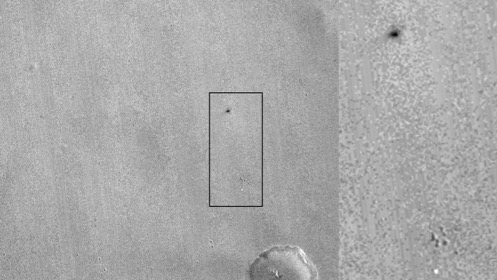
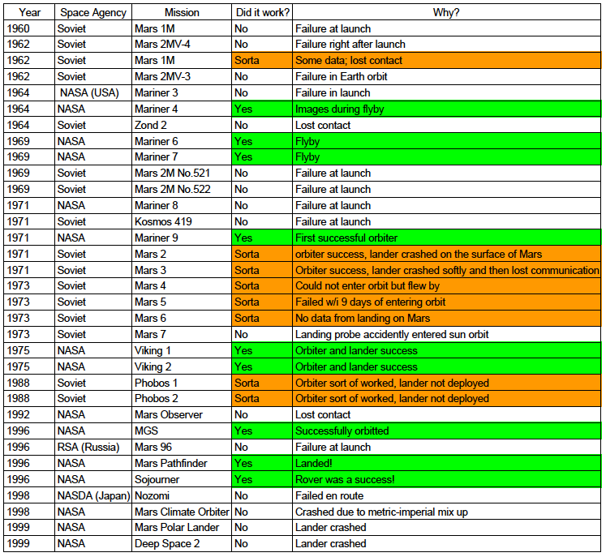
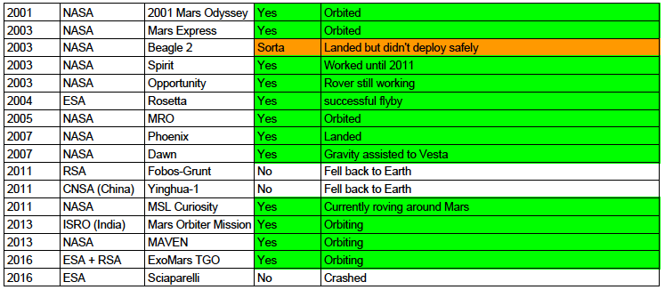
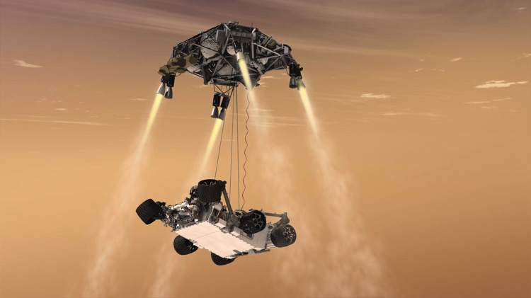
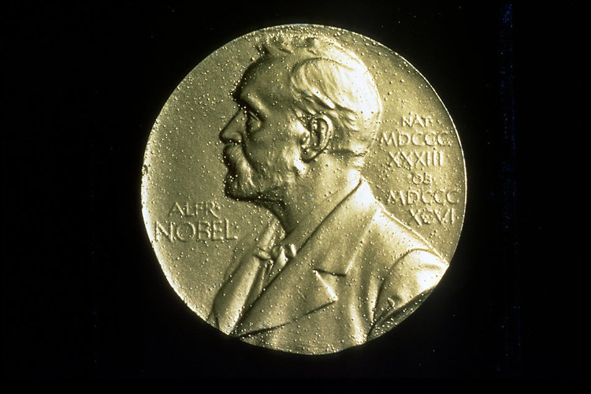
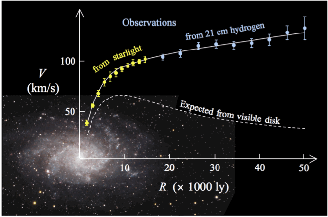
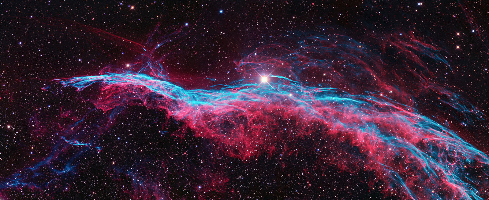
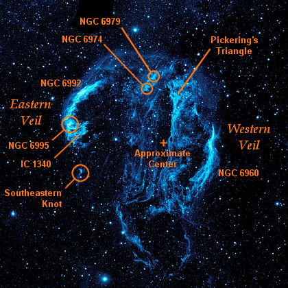
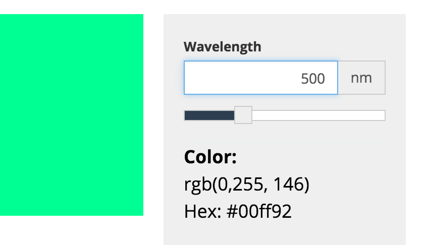
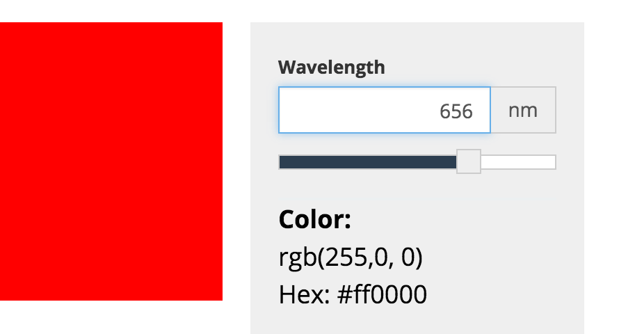

~~~~~~~~~~~~~~~~~~~~~~
The Martial Curse
Mars is not nice. It's not a fun, easy place to insert a satellite into orbit or to land a lander.
53% of missions to Mars have ended in failure, whether it be a failure to launch, a failure en route, or a failure to orbit and/or land.
This Wednesday, the ESA's Schiaparelli probe crash landed on Mars when its parachute released a minute too early. So this week I'd like to explore some of the more epic failures and why it's so hard for people to send robots, let alone people, to the red planet.

The Mars Reconnaissance Orbiter confirms using before and after shots that the Schiaparelli lander died a horrible death. The white speck is the parachute and the black dot is the impact crater from the crashed lander. (Image Credit: NASA/JPL-Caltech/MSSS)
Let's first go through a brief timeline of failure (with a few success stories). I've color-coded things where orange is a 'sorta' success and green is a successful mission. You can see that from the 60s to the end of the 90s there were few successes...

And onward to the next century, where the outlook get a little greener.

Overall, the missions that didn't work often failed to launch, insert into orbit correctly, or land gently. Going to Mars is especially challenging due to a few special factors including the length of the mission (it takes a few years and a lot of fuel to even arrive at Mars) and the demands of a delay in light travel time to communicate with the probes. In other words, you cannot rely upon real-time corrections to fix glitches in the computers. Therefore, the orbiters often fail to arrive at Mars due to computer or software problems that occurred during the extra-long journey. These glitches either shut down communication or resulted in an altered trajectory that cannot be corrected.
Only four space agencies have successfully sent a mission to Mars (NASA=USA, Soviet and RSA=Russia, ISRO=India, and the ESA=European).
If missions make it to Mars, it is often difficult for orbiters to insert into the atmosphere and landers to navigate the challenging and dynamic atmosphere during their descent. Therefore, the landings are seldom soft because they require a multi-stage descent to slow the lander. Unlike on Earth, you cannot rely upon a thick atmosphere to slow your fall and must often do fancy things like a sky crane (Curiosity landed this way).

An artist's conception of the landing of Curiosity using a detachable sky crane. (Image Credit: NASA/JPL-Caltech)
And then, even when the landers succeed, Mars' intense seasons, polar winters, dust storms, and winds can kill the rovers that have successfully landed on the surface. For instance, Spirit's solar panels eventually got buried by dust and the Phoenix lander froze to death in winter.
However, despite all the failures of the past, we're learning. We've learned to use metric units when building a spacecraft. We've learned how to launch long-range missions. We've learned how to use fancy technology to land on the surface of a planet with little atmosphere.
The real question is: How long before we're confident enough to send humans to the red planet? This will involve a whole series of new challenges and I can't help but wonder if we are able to face the daunting 53% failure rate to achieve this goal.
~~~~~~~~~~~~~
LESS THAN 1% OF NOBEL PRIZES IN PHYSICS ARE AWARDED TO WOMEN - HOUSTON, WE HAVE A PROBLEM

(Image Credit: Public Domain)
This is the Nobel prize, one of the most prestigious international awards. There are five Nobel prize categories (Peace, Chemistry, Physics, Physiology and Medicine, and Literature); today we're going to talk about physics.
This week, the Nobel committee announced the recipients of the Nobel prize in physics for 2016. Three British physicists had successfully investigated 'exotic phases of matter'. I got excited wondering if any of these brilliant physicists are women. I like it when bad-ass women do excellent science. But, much to my chagrin, and not really to my surprise, I quickly found out they are all men.
Marie Curie 1903 (Image Credit: Nobel Foundation)
I don't mean this post to at all belittle their work or the accomplishments of any of the physics Nobel prize recipients. They are all excellent scientists. Instead, I'd like to take some time to address something that's very personal to me as a woman in astronomy: Where are my role models?
It's the 21st century. The Nobel prize in physics has been awarded to exactly 204 people since 1901. 2 of those people were women*. 2/204 is LESS THAN 1%.
The last Nobel prize in physics awarded to a woman was Maria Goeppert Mayer in 1963 for "discoveries concerning nuclear shell structure" and before that .... go all the way back to 1903 to Marie Curie for "joint researches on the radiation phenomena".
Marie Curie almost didn't even get the Nobel prize. The committee was planning on awarding the prize to only Pierre, her husband, and Henri Becquerel (he discovered radiation). However, luckily one of the committee members was an advocate for women in science and was able to notify Pierre who protested strongly.
So what's the problem? According to the American Physical Society, 20% of individuals at the bachelor, doctorate, and postdoctoral level in physics are women. So shouldn't 20% of prizes in recent years be going to women researchers?
Part of the problem may be unconscious or conscious bias. Most Nobel prizes for all categories go to men and most often people of European descent. Part of this bias may originate in the fact that the awarding committee is composed of five people nominated by the Norwegian parliament. Nominations are also made by prominent scientists worldwide, so there may be some bias here.
Part of the problem may be the award structure. Currently, the physics award can be shared by three people maximum so these awards tend to go to leaders of large research groups. The entire group contributed to the achievement but only the leaders receive the recognition. In physics, the oldest and most prestigious faculty and research group leaders are almost entirely men (far lower than the 20% APS statistic I presented above).
Part of the problem may be a lack of transparency. The Nobel committee keeps their decisions secret for 50 years following the announcement of the award. So we have no idea if women were looked over in the 1970s and 80s. And 90s. And 2000s. And 2010s.
It might be time to right past wrongs. We do know that in 1974, the prize was awarded to Antony Hewish and Martin Ryle for their discovery of pulsars. However, Jocelyn Bell made the actual discovery from looking through the radio data. She was not included in the prize, which was instead awarded to her advisor.

Vera Rubin discovered that a vast amount of previously undetected dark matter in galaxies caused them to rotate faster than previously expected. (Image Credit: Stefania.deluca, Wikipedia Public Domain)
Another astronomer who was perhaps passed over (we don't know as of now if she was nominated) is Vera Rubin. There's a hashtag floating around, #NobelforVeraRubin, which advocates for the recognition of her discovery of dark matter. Dark matter spawned entire fields of astronomy and physics, yet Rubin never received a prize. Rubin is 88 and prizes cannot be awarded posthumously, so sadly it might be getting too late for her.
So how do we proceed? Hopefully, we can change the way it is awarded, increase transparency in the process, and right past wrongs. Awards in science should reflect the people who are doing the science and not ugly stereotypes and biases that we're trying to eliminate from the scientific community.
*THIS ARTICLE WILL FOCUS ON GENDER, ALTHOUGH THERE ARE DEFINITELY OTHER PROBLEMS WITH RACE, AGE, ETC WITH THE AWARDS
~~~~~~~~~~~~~~~~~~~~~~
PEEKING THROUGH THE VEIL: AN EXPLORATION OF ASTRONOMICAL IMAGES
They say a picture is worth 1000 words. But sometimes you need 1000 words to describe a picture. Astronomical images often beg more explanation and so today I'd like to do them justice by taking us on a journey through a famous nebula - the Veil:

(Image Credit: Ken Crawford, Wikimedia Commons)
Wow, this image is gorgeous.
Before I dive into the picture above I'd like to take a step back and put this image in context. This nebula is part of a much larger structure called the Cygnus Loop. The Cygnus Loop is a supernova remnant from a star that exploded probably somewhere between 5000-8000 years ago. It takes up an area on the sky equivalent to 36 full moons! If you happened to be alive at the time, this supernova would definitely have been visible from Earth.

An ultraviolet image of the Cygnus Loop taken by NASA's Galaxy Evolution Explorer. The Veil nebula is NGC 6960, which is part of the Western Veil. (Image Credit: NASA/JPL-Caltech)
Whoa, wait a minute. If this thing is 36 times the area of the full moon, why don't we get a lovely view of it at night? The short answer is that these images are composite images that are captured by telescopes that put the human eye to shame.
The blue image with the labels above is an ultraviolet images. Humans can only see visible light, so this telescope is capturing very faint emission with a long exposure time that humans could never hope to see because our eyeballs don't have access to this part of the electromagnetic spectrum.

The second ionized transition of oxygen, or OIII occurs at an energy associated with the wavelength 5007 Angstroms, or 500 nanometers. (Image Credit: Academo)
The first image up top with the lovely pink color is a color-composite RBG image that has been processed to highlight some very interesting features of the nebula. The pink color is representative of a very narrow filter type of exposure that tracks a specific emission feature known as H alpha, or Hydrogen alpha. The teal tracks my favorite emission feature, Oxygen III, or OIII for short. While these emission features are very interesting to astronomers because of the processes they track in nebulae, they also make for a beautiful image.

H alpha is a red color at 656 nanometers.
What color are these transitions? OIII is a green color and H alpha is red (look to the left). So in astronomical images, astronomers usually attempt to keep these transitions closely related to their true colors. But while these transitions are actually visible to the human eye, we wouldn't be able to see them looking up at the sky.
This image is created by combining a cumulative 36 hours of exposures. This telescope also has superior light collecting ability. The amount of light a telescope can capture is related to the area of the mirror. Put this way, you can see why the human eye falls short. But this is why we build telescopes, right?